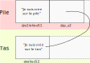

Dans les fiches précédentes nous avons vu le rôle d'un pointeur et comment l'utiliser dans le cadre du partage de ressources. Avant de parler des pointeurs intelligents, nous allons voir dans cette fiche que l'utilisation d'un pointeur peut parfois être pénible et qu'il existe une alternative appelée référence.
Pour mettre dans le contexte, voici un bout de code :
xint searchFirstCharacter(std::string* s, char c){ for(int i = 0; i < s->size(); i++) { if((*s)[i] == c) { return i; } } return -1;}void main(){ std::string s = "Hello World"; int position = searchFirstCharacter(&s, 'e'); std::cout << position << std::endl; // Affiche 1}
On voit que rien qu'avec cet exemple plutôt simple qui ne fait que rechercher le premier caractère trouvé dans une chaine de caractères, l'utilisation des pointeurs c'est pas facile à lire à cause de sa syntaxe. En plus de çà, qu'est-ce qui nous assure que la chaîne de caractères s envoyée à searchFirstCharacter est bien non nulle? Et bien rien, il faudrait faire le test soit même dans la fonction et retourner une exception si c'est le cas. On pourrait régler le problème de syntaxe et le problème d'adresse nulle en utilisant une variable classique, mais on sait déjà que çà entraine une copie de toute la chaîne de caractères et donc des problèmes de performance.
Et bien les références vont répondre à toutes ces problématiques, c'est parti pour les explications.
Une référence est une variable qui est un alias d'un même objet en mémoire. Lorsqu'on créé un objet en mémoire, celui-ci a une adresse à laquelle on peut y accéder, mais ce n'est pas super pratique pour un développeur de travailler directement avec des adresses. C'est pour çà que les variables interviennent dans le but de donner un nom à cette adresse en mémoire afin de pouvoir facilement l'identifier. Exemple:
xvoid main(){ std::string nom = "Tom";}
Dans ce bout de code ci-dessus, on créé un objet "Tom" en mémoire qui a une adresse pour qu'on puisse y accéder. Cette adresse, on ne la manipule pas directement, mais on utilise une variable appelé nom dans cet exemple qui fera office d'alias. Pour accéder à l'objet "Tom", alors j'utiliserai la variable nom. Néanmoins, ce n'est pas possible de créer une seconde variable qui serait un autre alias de l'objet "Tom".
xvoid main(){ std::string nom = "Tom"; std::string aliasNom = nom; // Copie de nom dans aliasNom}
Une copie sera réalisée de nom vers aliasNom, ce qui signifie que l'information est dupliquée en mémoire, l'un ayant le nom de nom et l'autre aliasNom. Un moyen détourné d'obtenir un autre alias d'une même valeur serait d'utiliser des pointeurs, mais on va voir qu'il existe un outil spécialement dédié à çà : les références.
Une référence est un outil qui se comporte quasiment comme une variable et qui représente l'alias d'un objet déjà créé en mémoire. Voici un exemple d'utilisation des références :
xxxxxxxxxxvoid main(){ std::string nom = "Tom"; std::string& aliasNom = nom;}& derrière le type.})
nom et aliasNom représente le même objet en mémoire "Tom". De plus une référence peut être un alias d'un objet créé aussi bien sur la pile que sur le tas. Exemple:
x
void main(){ std::string s1("Je suis créé sur la pile"); std::string& aliasS1 = s1; std::string* p_s2 = new std::string("Je suis créé sur le tas"); std::string& aliasS2 = *p_s2;}Voici un schéma représentatif de la mémoire du bout de code ci-dessus :

Lorsqu'on regarde par exemple le contenu de la variable s1, on voit qu'elle a aussi le nom de aliasS1. Pour te convaincre que les deux variables s1 et aliasS1 ne désignent qu'un seul et même objet, je te propose de lancer ce bout de code chez toi.
x
void main(){ // Création d'un entier int monEntier = 5; // Création d'une référence vers monEntier (alias) int& monEntierAlias = monEntier; //Création d'une autre référence vers monEntier (alias) int& monEntierAutreAlias = monEntierAlias; std::cout << monEntier << std::endl; // Affiche 5 std::cout << monEntierAlias << std::endl; // Affiche 5 std::cout << monEntierAutreAlias << std::endl; // Affiche 5 // Modification d'un des alias monEntierAlias = 3; std::cout << monEntier << std::endl; // Affiche 3 std::cout << monEntierAlias << std::endl; // Affiche 3 std::cout << monEntierAutreAlias << std::endl; // Affiche 3}De manière général, on préfère utiliser une référence pour éviter d'utiliser un pointeur. On a vu que l'utilisation de pointeurs est assez galère, que ce soit pour sa syntaxe, mais aussi de sa compréhension. On va essayer de voir les bienfaits des références sous plusieurs angles à travers du code pour que ce soit plus visuel.
_include(Attention,content={La suite n'a pas pour but de comparer les pointeurs avec les références, car ce ne sont pas la même chose, même si on pourrait tenter de le faire. Un pointeur contient une adresse explicite. Une référence est seulement un autre nom donné à un objet. Si tu es intéressé par la signification technique d'une référence, on pourra, dans un cours, faire quelques expérience au niveau du compilateur pour voir ce qu'il se passe.})Première règle, une référence ne peut pas être nulle. On le rappelle, une référence est un alias d'un objet déjà créé en mémoire, on ne va pas donner un nom à un objet qui n'existe pas, sinon on n'en finirait pas. Maintenant que l'on a dit çà, dans quel contexte çà peut être intéressant d'utiliser les références ? Et bien voyons un exemple à travers ce petit bout de code :
x
int sum(const std::vector<int>& values){ auto total = 0; for(int i = 0; i < values.size(); i++) { total += values[i]; } return total;}void main(){ std::vector<int> numbers {1, 3, 5, 6}; auto result = sum(numbers); std::cout << result << std::endl;}
Ici, le but est de calculer la somme de tous les nombres contenus dans un vecteur à travers la fonction sum. La fonction sum a comme paramètre d'entrée une référence sur un vector<int> appelée values. Lorsqu'on envoie le vecteur numbers à la fonction sum, dans ce contexte, values devient un alias de numbers. numbers et values sont alors deux alias d'un même objet vector<int> en mémoire. A partir de là, toutes les opérations réalisées avec values auront le même impact sur numbers.
Tu auras peut être remarqué le const devant le paramètre values, il est !!! important !!!, il permet d'interdire tout accès en écriture au contenu de values, ce qui signifie dans le code que l'on est autorisé à lire les valeurs de values, mais que l'on ne peut pas les modifier. Il faut mettre const dès que l'on peut et çà pour plusieurs raisons. On indique d'abord à l'utilisateur qui appelle la fonction (dans l'exemple c'est la fonction sum), que les paramètres qui sont const ne pourront pas être modifiés durant l'exécution de la fonction (dans l'exemple c'est le paramètre values, ce qui est bien pratique pour lui afin d'être certain que les variables qu'il envoie ne seront pas modifiées. Enfin il y a une raison d'optimisation, les variables de type const sont parfois optimisées par le compilateur.
On vient donc de dire que values est un alias de numbers au moment de l'appel de la fonction sum, ce qui implique alors qu'il n'y aucune copie qui est réalisée puisque les deux variables values et numbers représentent bel et bien le même objet. Avec les références, on peut donc éviter des copies de lourds objets.
En plus d'une syntaxe qui est un petit bonheur, on en vient au sujet du titre de cette section, c'est que values ne peut pas être nul. La conséquence de cette règle ici, c'est que contrairement aux pointeurs, on sait que le paramètre values représente forcément un objet std::vector<int> en mémoire, on a donc pas à se soucier si l'accès à l'objet en mémoire est bien correcte. Voici ce que le même code aurait pu être en utilisant des pointeurs.
x
int sum(std::vector<int>* values){ auto total = 0; for(int i = 0; i < values->size(); i++) { total += (*values)[i]; } return total;}void main(){ std::vector<int> numbers {1, 3, 5, 6}; auto result = sum(&numbers); std::cout << result << std::endl;}
On voit déjà toute la lourdeur syntaxique de l'utilisation des pointeurs dans ce code avec le déréférencement. Ce sur quoi je veux attirer l'attention et mettre des !!! , c'est lorsque l'on doit vérifier si le paramètre values n'est pas nul, parce qu'un pointeur a tout à fait le droit de contenir une adresse nulle. On laisse le développeur vérifier s'il lui ou ses collègues n'ont pas fait de bêtises lorsque la fonction sum est appelée. Tu vois ce que je veux dire ? Un être HUMAIN qui vérifie ce genre de chose?? C'est la cata parce qu'on est absolument pas sûr que le développeur n'oublie pas un jour de faire ce check et que le programme ait un comportement totalement inattendu. Bref, l'utilisation de références ici permet d'éviter toute cette potentielle catastrophe.
Petit aparté : on pourrait être tenter de contre-argumenter avec le petit bout de code ci-dessous.
xint sum(const std::vector<int>& values){ // [...]}void main(){ std::vector<int>* p_numbers = nullptr; auto result = sum(*p_numbers); std::cout << result << std::endl;}
Ici on créé un pointeur sur un vecteur d'entiers, mais dont l'adresse est nulle. On essaye ensuite d'envoyer à la fonction sum l'objet pointé par p_numbers. Au final, on atteindra jamais l'exécution de la fonction sum, puisque le programme va crash au moment du déréférencement de p_numbers comme c'est un pointeur nul. La faute est donc du côté de l'appelant de la fonction sum.
Et bien l'utilisation des pointeurs est nécessaire au moins pour les deux choses suivantes :
En effet, il n'est pas possible de stocker l'adresse d'un objet créé sur le tas dans une référence, puisqu'elle n'a pas pour but de stocker une adresse mais plutôt de représenter l'objet dont elle est l'alias.
xxxxxxxxxxvoid main(){ int* ptr = new int(3); int& a = *ptr; delete ptr; int& b = new int(3); // Erreur de compilation}a qui est un alias de l'objet pointé par ptr. Mais tu libères la mémoire quand tu fais delete ptr;, que se passe t-il pour a si l'objet int n'existe plus?})
Et oui, rappelles-toi, on a dit qu'une référence ne peut pas être nul, il est obligé d'être l'alias d'un objet existant et dans ce cas l'objet n'existe plus. Et bien on tombe sur un comportement indéfini, ni plus ni moins. D'ailleurs on aurait aussi un comportement indéfini si on essayait de déréférencer ptr après delete ptr;. Ce genre de cas arrive quasiment jamais, comme dans l'exemple avec la fonctin sum. Les seuls cas, où on a un risque qu'une référence ne soit plus valide, c'est lorsqu'on programme en "multi-threading" avec différent threads qui manipule un même objet, ou dans le cas où un pointeur sur un objet est stocké par référence dans une classe, et une référence sur ce même objet est stockée dans une autre classe.
xclass Widget{};class Bar{ Widget* _widget;public: Bar(Widget* widget) : _widget(widget){} ~Bar() { delete widget; }};class Foo{ Widget& _widget;public: Foo(Widget& widget) : _widget(widget){}};void main(){ auto widget = new Widget(); Bar bar(*widget); // contexte local { Foo foo(widget); } // destruction de foo et donc de l'objet Widget à l'intérieur}
Si tu ne comprend pas ce code, ou si tu veux du contexte, on pourra en discuter pendant un cours.
Pour conclure sur les références, j'aimerais juste faire un petit point sur le vocabulaire. Une variable peut être envoyée à une fonction de différentes manières.
La première est appelée Passage par valeur, c'est lorsque la valeur contenue dans la variable est copiée dans la paramètre destinataire de la fonction.
La seconde est appelée Passage par référence, c'est lorsque la valeur contenue dans la variable est directement modifiable via le paramètre de la fonction. Alors attention de ne pas confondre, passage par référence ne désigne pas les variables type référence. On voit dans le code ci-dessous que le passage par référence peut désigner aussi bien les pointeurs que les références.
xvoid passageValue(std::string s){ s = "tata"; // s est une copie}void passageReference(std::string &s){ s = "tata"; // s est une référence}void passageReference(std::string* s){ *s = "titi"; // s est un pointeur}void main(){ std::string s = "toto"; passageValue(s); std::cout << s << std::endl; // Print "toto" passageReference(s); std::cout << s << std::endl; // Print "tata" passageReference(&s); std::cout << s << std::endl; // Print "titi"}
Résumé sous forme de code:
xvoid foo(std::string& parameter){ parameter = "Hello World again";}void fooConst(const std::string& parameter){ // impossible de modifier parameter // Mais on peut y accéder en lecture std::cout << parameter << std::endl; // Print "Hello World again"}void main(){ std::string hello = "Hello"; // Création d'une référence std::string& helloAlias = hello; // Modification d'une référence (alias) => modification de tous les autres alias helloAlias = "Hello World"; std::cout << hello << std::endl; // Print "Hello World" std::cout << helloAlias << std::endl; // Print "Hello World" // Envoi d'une valeur par référence foo(hello); std::cout << hello << std::endl; // Print "Hello World again" std::cout << helloAlias << std::endl; // Print "Hello World again" // Envoi d'une valeur par référence constante // Je sais que la variable hello n'est pas modifiée dans la fonction fooConst fooConst(hello); std::cout << hello << std::endl; // Print "Hello World again" std::cout << helloAlias << std::endl; // Print "Hello World again" // La syntaxe pour les références restent la même que pour les variables "classiques" class Widget { public: string name = "I am super widget"; }; Widget widget; Widget& widgetAlias = widget; // Accès à Widget::name std::cout << widget.name << std::endl; // Print "I am super widget" std::cout << widgetAlias.name << std::endl; // Print "I am super widget" // C'est aussi le cas pour les objets créés sur le tas Widget* p_widget = new Widget(); Widget& widgetTasAlias = *p_widget; std::cout << p_widget->name << std::endl; // Print "I am super widget" std::cout << widgetTasAlias.name << std::endl; // Print "I am super widget"}